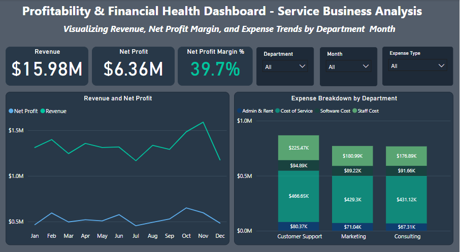
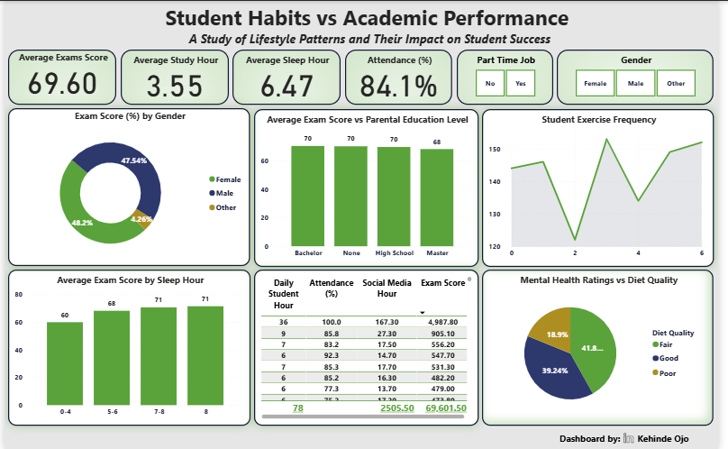
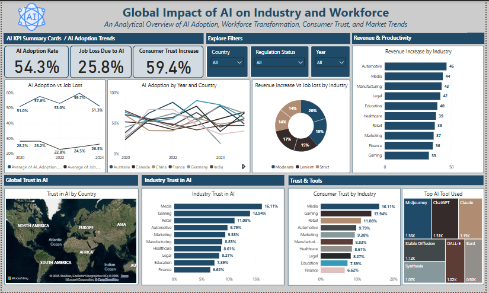
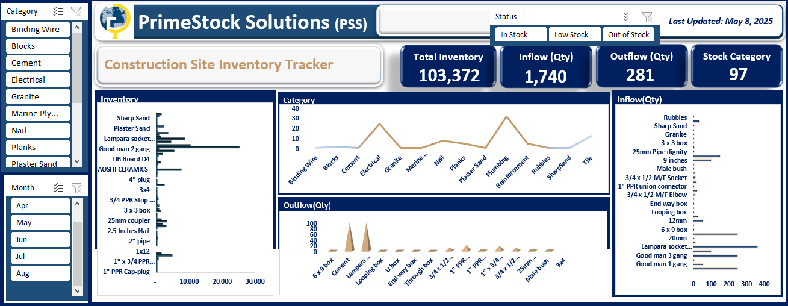

Inventory Management & Stock Monitoring Dashboard
Businesses lacked real-time visibility into stock levels, supplier trends, and inventory value, leading to reactive decisions and hidden losses.
Designed an Excel dashboard using Pivot Tables, Pivot Charts, and dynamic formulas to centralize inflows, outflows, and reorder alerts.
Delivered instant visibility into inventory health, reduced stock-out risks, and enabled confident, data-driven replenishment decisions.

Healthcare Exams Analysis
Exam bodies across West Africa lacked a centralized system to track registrations, revenue, and performance, limiting oversight and planning.
Cleaned and analyzed 1,000+ candidate records in Excel, then built a dashboard with dynamic filters for revenue and distribution insights.
Delivered instant visibility into candidate markets, revenue tiers, gender gaps, and geographic spread, enabling faster evidence-based decisions.

Automated Payroll System
A growing organization processed payroll manually in Excel each month, leading to calculation errors, slow payslip generation, and difficulty handling mid-month staff changes like new hires or exits.
Built a fully automated payroll system in Excel using formula-driven calculations and VBA, with dynamic salary proration, percentage-based allowances, automatic tax and pension logic, and one-click PDF payslip export.
Reduced payroll processing from hours to minutes, eliminated manual calculation errors, and gave staff instant access to accurate, professional payslips for any selected month.

Invoice Workflow Automation
Manual invoice submission and approval caused delays, lost records, and zero visibility into approval status across departments.
Built an automated workflow using Google Forms, Sheets, and Apps Script to centralize submissions and streamline multi-stage approval tracking.
Eliminated manual bottlenecks, improved cross-department visibility, and enabled real-time tracking of every invoice from submission to approval.

Financial Data Reconciliation Workflow
Collections, transfers, and adjustments were tracked in separate files, making it difficult to identify variances or outstanding balances quickly.
Designed a structured Excel reconciliation system that unified all financial movements into a single workflow with built-in scenario analysis.
Improved financial transparency, cut variance identification time, and gave stakeholders a cleaner, auditable view of account positions.

Profitability & Financial Health Analysis
A service-based company lacked visibility into which departments drove costs versus revenue, making strategic decisions reliant on intuition rather than data.
Used Python for exploratory data analysis and Power BI to build interactive dashboards surfacing revenue trends, profit margins, and departmental cost drivers.
Gave leadership a clear, drill-down view of financial health by department, enabling data-backed decisions on cost control and resource allocation.

Estate Financial Tracker
A residential estate had no centralized system to track revenue inflows by unit, bill type, or time period, limiting management's financial oversight.
Built a financial tracking system using SQL and Excel, then designed an interactive Power BI dashboard with dynamic filters by block, bill type, and time period.
Stakeholders gained instant visibility into top-paying units, income distribution, and revenue trends, enabling faster and more informed financial decision-making.

HR Attrition Dashboard
An organization was experiencing high employee turnover but lacked data to pinpoint which roles, departments, or conditions were driving attrition.
Analyzed HR datasets using SQL and Excel, then built an interactive Power BI dashboard highlighting attrition risk by job role, tenure, and work-life balance metrics.
Gave HR leaders a data-backed foundation for targeted retention strategies, replacing guesswork with evidence on which employee segments needed the most attention.

Student Habits vs Academic Performance
Educators and institutions often track grades but overlook behavioral and lifestyle factors that influence academic outcomes, making early intervention difficult.
Analyzed student dataset covering study hours, sleep, attendance, exercise, and mental health, then built a Power BI dashboard to surface patterns by habit group.
Revealed which lifestyle factors most strongly correlated with high exam scores, providing a data-driven basis for student support programs and early-alert systems.

Global AI Impact Analysis
Policymakers and organizations debating AI adoption lacked a structured, cross-country view of how AI is actually affecting employment, growth, and public trust.
Cleaned and analyzed multi-country AI adoption data using Python, then built a Power BI dashboard mapping trends across industries, workforce, and regulatory environments.
Produced a clear, comparative intelligence tool for stakeholders to explore the economic and social effects of AI across different geographies, supporting evidence-based policy decisions.

Construction Site Inventory Tracker
A construction site had no reliable system to track material inflows and outflows, leading to stockouts, waste, and poor on-site operational control.
Built an Excel-based inventory management system with integrated KPIs and visual stock-level indicators for real-time monitoring of material usage and availability.
Reduced material waste, improved procurement planning, and provided site managers with instant visibility into stock levels, improving overall operational efficiency on-site.